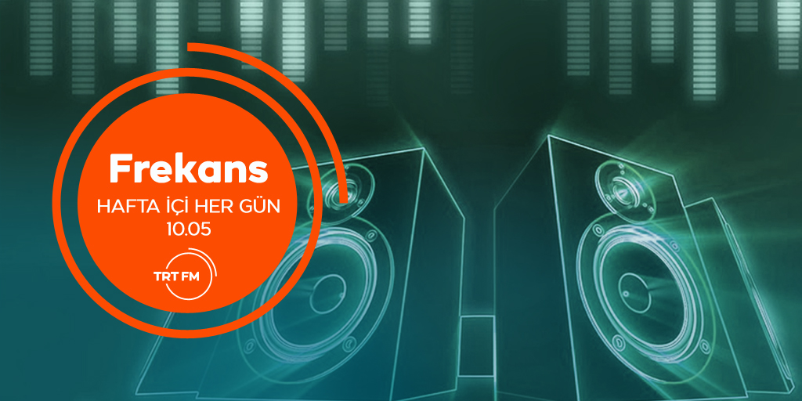
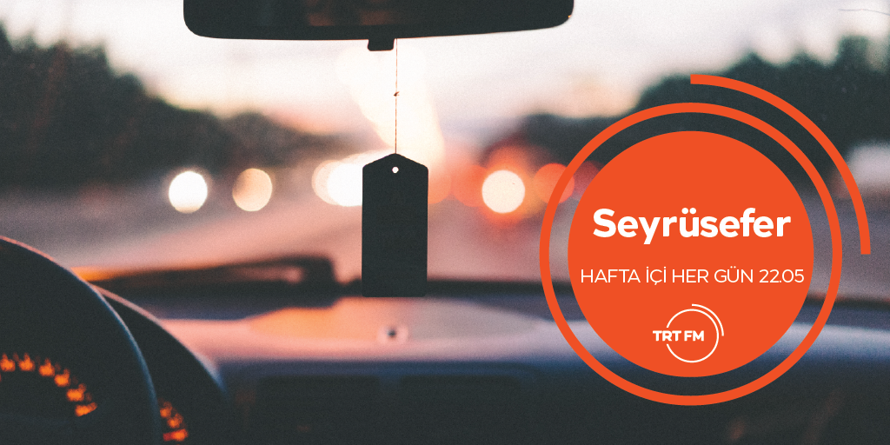

Favorite Broadcasts

Frekans
TRT FM kanalının Türkiye’nin her noktasına ulaşan sesin içinde yer alan "FREKANS" güncel şarkıları, farklı konuları ve ters köşe sohbetiyle hafta içi her gün 10.00-12.00 saatleri arası TRT FM'de kuşak program yayınlanmaktadır

Gün Bugün
Eray Ergün'ün hazırladığı, Kerem Demircioğlu'nun sunduğu Gün Bugün, hafta içi her gün, 14.00 - 16.00 arasında TRT FM dinleyicisi ile buluşuyor.
Günübirlik
Feyza Aktaş Kanarya ve Emine Eroğlu SAĞER ’in hazırladığı “Günübirlik”, hafta içi her gün
12:00’den 14:00’e,Feyza Aktaş KANARYA’nın sunumuyla radyolarınızda.

Seyrüsefer
Hafta içi her akşam 22.00-24.00 arası Seyrüsefer programında Ümit Dandul’un sunumuyla müzik yolculuğuna davetlisiniz.